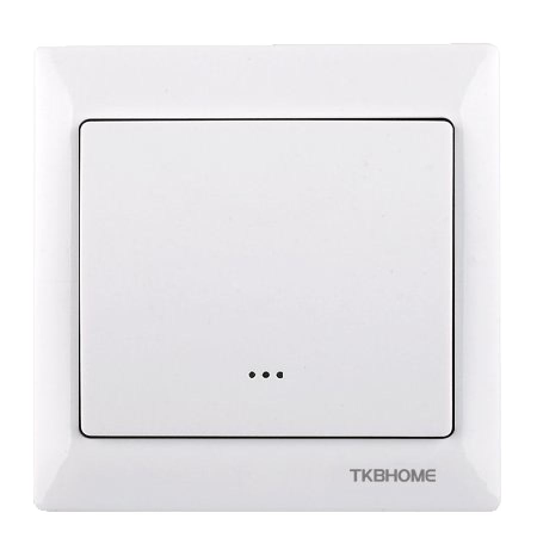
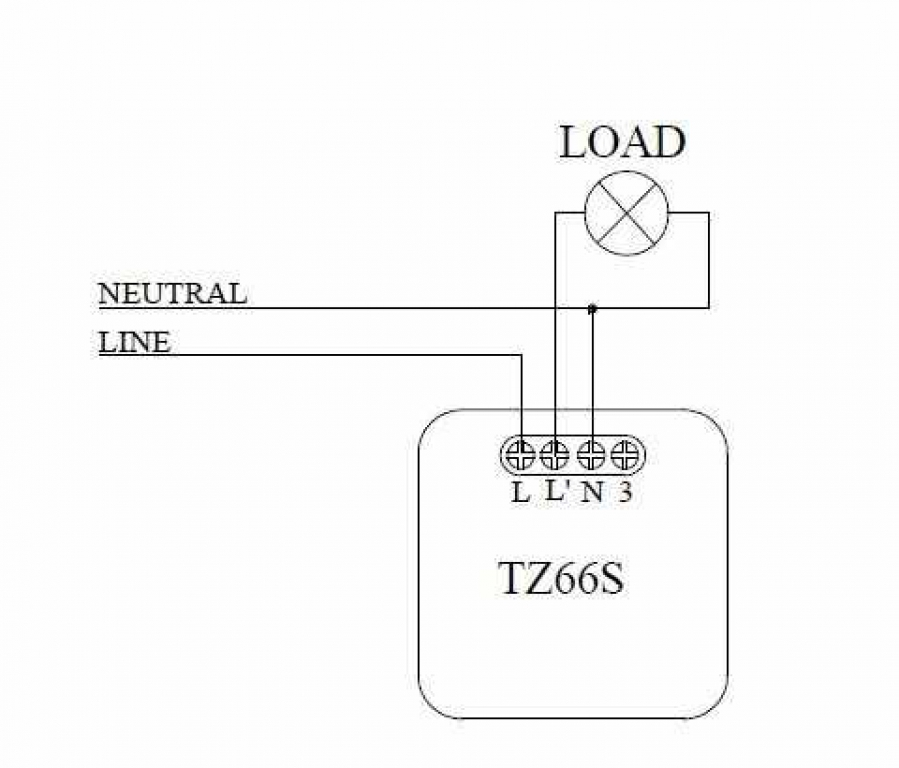

TKB_TZ66-S
Firmware Version : 1.3 |
 |
Quick StartTo include the device into the network, turn the controller into the inclusion mode and then press the upper or lower part of the paddle of the device. The device is now ready to work. Please refer to the chapters below for detailed information about all aspects of the products usage. |
The TZ66-S single wall switch is switching attached loads and is controlled either by the local switching paddle or remotely via the Z-Wave wireless protocol. It is included and controlled in a Z-Wave network by a remote control, a wireless control centre or any other kind of Z-Wave controller including a PC-software. Beside the local switch the unit can control other Z-Wave units remotely in up to three additional Z-Wave groups, which are associated with this device. Tipping one time or two times the switching paddle performs the control. The association of further Z-Wave devices needs to be done by a Z-Wave controller. The unit is powered by 230V power and needs a pattress box with 230 V power wires for installation.
The unit is shipped completely with electronics, switching paddle and mounting frame in arctic white HomePro style, which can be replaced by another mounting frame of the HomePro switching series. The unit is designed for use within a 3-wire system, which means that a neutral wire (blue) is needed for operations.
The TZ66-S wall mounted switch needs a pattress box with 230 V power wires for installation. It does not fit into German wall boxes with 60 mm diameter.

I On factory default the device does not belong to any Z-Wave network. The device needs to join an existing wireless network to communicate with the devices of this network. This process is called Inclusion. Devices can also leave a network. This process is called Exclusion. Both processes are initiated by the primary controller of the Z-Wave network. This controller will be turned into exclusion respective inclusion mode. Please refer to your primary controllers manual on how to turn your controller into inclusion or exclusion mode. Only if the primary controller is in inclusion or exclusion mode, this device can join or leave the network. Leaving the network - i.e. being excluded - sets the device back to factory default.
If the device already belongs to a network, follow the exclusion process before including it in your network. Otherwise inclusion of this device will fail. If the controller being included was a primary controller, it has to be reset first.
To include the device into a controllers Z-Wave network first setup the controller you are using into inclusion mode. Afterwards tap either the top or bottom of the switch once.
The device is excluded by a single click on the switch when the controller is in exclusion mode.
The actuator is operated by the local switching paddle or wirelessly using Z-Wave commands. If the insert is mounted correctly pushing the upper part of the paddle will turn ON the load. Pushing the lower part of the paddle will turn OFF the electric load. Pressing and holding the switch will allow dimming and brightening of Z-Wave dimmers if associated.
The device is also able to report status changes to a controller (communication pattern 2) and to remotely operate other devices by sending wireless Z-Wave commands. As part of a Z-Wave network, the TZ66-S will also act as a wireless repeater to insure that commands intended for another devices in the network are received.
A Z-Wave devices control other Z-Wave devices. The relationship between one device controlling another device is called association. In order to control a different device, the controlling device needs to maintain a list of devices that will receive controlling commands. These lists are called association groups and they are always related to certain events (e.g. button pressed, sensor triggers, ...). In case the event happens all devices stored in the respective association group will receive a common wireless command.
Association Groups:
| 1 | every switching command (max. nodes in group: 5) |
Z-Wave products are supposed to work out of the box after inclusion, however certain configuration can adapt the function better to user needs or unlock further enhanced features.
IMPORTANT: Controllers may only allow to configure signed values. In order to set values in the range 128 … 255 the value sent in the application shall be the desired value minus 256. For example: to set a parameter to 200 it may be needed to set a value of 200 minus 256 = minus 56. In case of two byte value the same logic applies: Values greater than 32768 may needed to be given as negative values too.
| Value | Description |
|---|---|
| 0 | ignore |
| 1 | dont ignore (Default) |
| Value | Description |
|---|---|
| 0 | LED blinks on activity (Default) |
| 1 | Night Light active |
| Value | Description |
|---|---|
| 0 | dont invert (Default) |
| 1 | invert |
| Value | Description |
|---|---|
| 0 | no flicker (Default) |
| 1 | flicker all time of data transmission |
| 2 | flicker for one second only |
| Power Supply | 230V |
| Attachable Loads | up to 1380 W |
| IP Rating | IP 20 |
| Frequency | 868.42 MHz |
| Wireless Range | |
| Explorer Frame Support | No |
| SDK | 5.03 |
| Device Type | Slave with routing capabilities |
| Generic Device Class | Multilevel Switch |
| Specific Device Class | Multilevel Power Switch |
| Routing | Yes |
| FLiRS | No |
| Firmware Version | 1.3 |